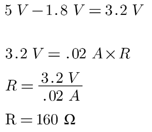

Assignment 1: Blink!
Schematic

This is a schematic of the finished circuit. From the arduino, I connected
wires to three pins (pin 13, 12, and 11). The circuit as a whole is in parallel
since they are different paths that go to the same ground. Each path has a 220 Ω
resistor as well as an LED. The reason I chose 220 Ω resistors is because
of Ohm's Law (Voltage = Current x Resistance). Each LED I chose (red, green, and yellow)
have a voltage drop of 1.8 V and I knew that I wanted .02 A of current running through
each path. Since the circuit is in parallel, I also knew that the voltage would be 5 V in each
branch. I used Ohm's law to calculate the resistance needed for each path
which ended up being 160 Ω. I didn't have any 160 Ω resistors so I ended up using the closest
ones I had that were higher than 160 Ω since I didn't want to burn out the LEDs.

Code
void setup() {
pinMode(LED_BUILTIN, OUTPUT); // Sets an output to pin 13
pinMode(12, OUTPUT); // Sets an output to pin 12
pinMode(11, OUTPUT); // Sets an output to pin 11
}
void loop() {
// First light on
digitalWrite(LED_BUILTIN, HIGH); // Pin 13 LED is on
digitalWrite(12, LOW); // Pin 12 is off
digitalWrite(11, LOW); // Pin 11 is off
delay(1000); // The first light is on for 1 second while the others are off
// Second light on
digitalWrite(LED_BUILTIN, LOW); // Pin 13 is off
digitalWrite(12, HIGH); // Pin 12 is on
digitalWrite(11, LOW); // Pin 13 is off
delay(1000); // The second light is on for 1 second while the others are off
// Third light on
digitalWrite(LED_BUILTIN, LOW); // Pin 13 is off
digitalWrite(12, LOW); // Pin 12 is off
digitalWrite(11, HIGH); // Pin 11 is on
delay(1000); // The third light is on for 1 second while the others are off
}
This is the arduino code that runs to blink the LEDs. In a nutshell,
it makes it so each LED is on for 1 second while the other LEDs
are off. The LED is determined by what pin it's wired to as seen in the
schematic. The loop is set to go on forever since there's no end condition.
Circuit Operation

This is what the circuit looks like when operating. The loop begins
with the red LED, goes to the green LED, then the yellow LED, and
then loops back to the red LED and so on.
Additional Questions
1. Draw a graph where the X axis is time and the Y axis is
voltage across the LEDs. Draw a line for each of your 3 LEDs.
2. How many LEDs could you blink independently with your Arduino?
How much current would that draw?
The total number of pins on my arduino is 13 so it would be possible
to attach 13 LEDs in total. But if I were to do that and I wanted .02 A of current
to go through each branch, it would be a total of .26 A or 260 mA which is above the
recommended amount of 200 mA from the arduino. So taking that into account, it
would be around 10 LEDs.
3. How fast do you need to blink your LEDs until you no longer can
tell that they are blinking?
1 milisecond.
4. AI Tools
I used AI tools mostly for help with thinking through voltage, current, and
resistance just to ensure that I had the right idea about building my circuit.
It was pretty helpful in pointing me towards Ohm's Law and if I was doing my
calculations properly.